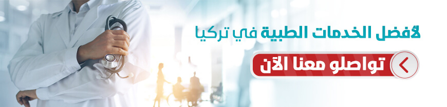

طب العيون في تركيا
يمكنكم الإطلاع على احدث التقنيات العلاجية في طب العيون في تركيا , تمتلك تركيا العديد من المستشفيات الطبية الحديث والتي تمتلك احدث الاجهزة الطبية والكوادر الطبية الخبيرة التي جعل من تركيا دولة مميزة في طب العيون

طب و جراحة العيون في تركيا وتكاليفها
سنتعرف في هذا المقال على أشهر علاج وجراحة العيون في تركيا , وانواعها ومميزاتها , تتصدر تركيا الدول العربية والأوربية في التقنيات الحديثة لعلاج الكثير من أمراض العيون .
جدول المحتويات
هل طب العيون في تركيا قوي ؟
تمتلك تركيا العديد من المستشفيات الطبية الحديث والتي تمتلك احدث الاجهزة الطبية والكوادر الطبية الخبيرة التي جعل من تركيا دولة مميزة في طب العيون، وتأتي تركيا في المرتبة الاولى عالميا من حيث عدد العمليات الجراحية العينية للمرضى الأجانب.
وتتميز علاجك الطبية بتقديم أحدث تقنيات التشخيص على أيدي أمهر الخبراء في مجال تصحيح النظر.
مميزات طب العيون في تركيا
بلغ عدد السياح الذين جاؤوا إلى تركيا لإجراء عمليات علاج العيون و زراعة الشعر والأسنان في الربع الأول من العام الحالي 2021 نحو 125 ألفاً ، معظم السياح الذين فضلو تركيا لتلقي الخدمات العلاجية كانوا من الدول الأوروبية وذلك يعود لمزايا عديدة:
- المشافي التركية تقدم افضل انواع الخدمات في طب العيون وباحدث التكنولوجيا المتطورة وبطرق علاج مختلفة وحاصلة على الجودة ISO وكذلك شهادة JCI، بالإضافة أنها تقدم خدماتها على مدى 24 ساعة يوميا وطول ايام السنة لتقدم طرق العلاج الامثل لمشاكل وامراض العيون ، حيث بدأت هذه المشافي لطب العيون عصر جديد في قطاع المشفيات التخصصية في تركيا .
- وجود أطباء خبراء ، إذ تقدم المشافي التركية أعلى مستوى من الرعاية الصحية مع الأطباء المُتخصصين في هذه النوعية من العمليات والذين أجروا آلاف العملية خلال حياتهم المهنية.
- التعليم الطبي الإحترافي ، حيث نال الأطباء تعليمهم وتدريبهم في أرقى وأفضل الجامعات الأكاديمية التركية والمصنفة عالمياً خاصة في مجال الطب و بأحدث التقنيات .
- توفر أفضل المعدات والأجهزة التي يمكن استخدامها خلال العملية ومن بينها الروبوت وجهاز سيريوس لتحليل القرنية بشكل ثلاثي الأبعاد .
- نسبة النجاح المرتفعة جدا ، إذ تمتلك المشافي التركية خبرة طويلة و تاريخ حافل بالنجاح في عمليات طب العيون.
- البيئة السياحية العصرية ، إذ تعد تركيا رائدة عالميا في مجال السياحة مابعد العلاج والإستشفاء بعد الإصابات والعمليات في المنتجعات الصحية التخصصية وبوجود الينابيع الساخنة والحمام التركي .
انواع علاجات طب وجراحة العيون في تركيا
تتعدد العلاجات في تركيا لتعدد التقنيات المستخدمة في المراكز والمشافي الحديثة ومن بينها:
- عمليات الليزك والجراحة الإنسكارية والفيمتو ليزك والسمايل
- عمليات أمراض الشبكية
- عمليات زراعة العدسات
- تصحيح الحول
- العيون الاصطناعية في تركيا
- عمليات القرنية المخروطية
- عمليات المياه البيضاء
- عمليات تصحيح قصر النظر
- عمليات تصحيح طول النظر
- علاج التهاب القزحية
عمليات الفيمتو ليزك
تطوّرت الجراحات التي تستخدم الليزر لحلّ مشاكل انكسار البصر، كالطول والقصر والانحراف البصري حتى وصلنا إلى تقنية الليزك التي لاقت شعبيّة واسعة؛ وذلك لأمانها ولسرعة الشفاء، حتى أنّه أصبح بإمكان جرّاحي العيون فتح القشرة الخارجية للقرنيّة باستخدام تكنولوجيا ليزر الفيمتوسيكند وبدقّة متناهية.
تستخدم عملية الفيمتوليزك لتصحيح مشاكل النظر من طول وقصر بكافّة درجاته من بسيط ومتوسّط وشديد، سواء أكان مصحوباً بانحراف أم غير مصحوب به.
عملية الفيمتو سمايل
تعتبر تقنية سمايل التقنية الأحدث في عمليات تصحيح الأخطاء البصرية الانكسارية بالليزر، وتتضمّن عمل شقٍّ صغير جداً عند أحد أطراف القرنيّة باستخدام الفيمتوليزر، ويتمّ معايرة القرنيّة لضبط ارتفاعاتها في المناطق المختلفة، بحسب القياسات المحددة مسبقاً وباستخدام الفيمتوليزر أيضاً، ويقوم الجرّاح باستئصال الجزء الزائد من الشبكية بعد المعايرة، على شكل جزء هلاليّ صغير، عبر الشق الصغير الذي تمّ عمله مسبقاً، كما في عمليات الليزك والفيمتوليزك، تُعدُّ عملية سمايل عمليّة صغرى، لا تتطلّب تخديراً عاماً (كاملاً) أو مبيتاً في المشفى، وتتمّ بمخدر موضعيّ.
عمليات أمراض الشبكية في تركيا
يقوم الطبيب بتحديد الطريقة الأنسب للعلاج حسب حالة كل مريض بشكل منفصل ، ومن طرق العلاج :
بالإضافة لعمليات علاج نزف شبكية اللعين:
- العلاج بالتخثير الضوئي
- استئصال زجاجية العين
عمليات زراعة العدسات في تركيا
تعد زراعة العدسات وسيلة للتخلص من إستعمال النظارات والعدسات الرقيقة ، إذ تستعمل في علاج قصر النظر و مد النظر و والقرنية المخروطية. ومن بين أنواعها :
- العدسات اللاصقة الرقيقة المخصصة
- العدسات اللاصقة الرقيقة النافذة للغاز
- العدسات الصلبة النافذة للغاز
- العدسات اللاصقة الهجينة
تصحيح الحول في تركيا
هي حالة لا يلتقي فيها محورا الرؤية في كلتا العينين عند النظر إلى شيء محدد ، يظهر غالباً في مرحلة الطفولة إلا أن هناك حول مكتسب يظهر عند التقدم في السن .هناك عدة أنواع للحول ويتم تحديدها بحسب اتجاه انحراف العين:
- الحول الأفقي:
- الحول الداخلي
- الحول الخارجي
- الحول العامودي :
- التوجه العلوي
- التوجه السفلي
يتم إجراؤها بالشد أو بالإرخاء لإصلاح عضلات العين لتصحيح الحول ، ففي بعض الحالات لا يمكن علاج الحول إلا بالتدخل الجراحي، يتم إجراء جراحة تصحيح الحول للأطفال والبالغين ، وتستغرق العملية مابين ساعة إلى ساعتين.
العيون الاصطناعية في تركيا
وتعرف ايضا بالعيون التعويضية أو التجميلية وتجرى في حالات فقدان العين بسبب حادث ، أسباب خلقية ، بسبب المرض أو السرطان أو حدوث تشوه مقارنة بالعين الأصلية ، و تصنف حسب عملية التصنيع إلى الجاهزة و التفصيلية والمتحركة. ويتم إجراء العملية بأحد الطرق التالية:
- عملية إستصال العين : هي عملية فصل عضل العين والعصب البصري ، بما فيه مقلة العين وكل محتويات العين ، بعد ذلك يتم ربط الزرع العيني بعضلات العين.
- عملية إفراغ العين : تتم إزالة محتويات العين الداخلية ، مع إبقاء القشرة الخارجية وعضلات العين في مكانها دون المساس بعضل العين والعصب البصري.
وبعد الجراحة يتم تركيب قشرة خارجية بلاستيكية شفافة وبشكل مؤقت في محجر العين لمساعدة العين على التعافي والشفاء وأخذ الشكل المطلوب ، وبعد مرور بضعة أسابيع يتم استبدال القشرة الخارجية الشفافة بعين اصطناعية.
عمليات القرنية المخروطية
سيقوم الطبيب المختص بإختيار نوع العملية المناسبة بعد التشخيص وتحديد مرحلة القرنية المخروطية. ومن بين العمليات التي تجرى:
- عملية زراعة حلقات: شرائح الحلقات القوسية الشكل هذه تزرع بشكل جراحي على حافة للقرنية لتعيد تشكيل السطح الأمامي للعين برؤية واضحة.
- رأب القرنية الموصلة الموجه طبوغرافيًا: العلاج يستخدم طاقة الصادرة من أمواج الراديو والمطبقة على نقاط متعددة محددة في القرنية لتعيد تشكيل سطح القرنية ، والخريطة الطبوغرافية المصنعة عبر الحاسوب تشكل صورة سطح العين والتي تساعد في صنع الخطة العلاجية الفريدة لكل حالة قرنية مخروطية.
- رأب القرنية الشعاعي : وهي عملية جراحية تقوم بعمل شقوق على شكل خطوط شعاعية في داخل القرنية لتعديل شكلها ، تتم عبر اللاسيك وأجهزة أخرى لعلاج ضعف وقصر النظر.
زرع القرنية
بعض الأشخاص الذين يعانون من القرنية المخروطية لا يمكنهم تحمل عدسة لاصقة صلبة ، أو يصلون إلى النقطة التي لم تعد توفر فيها العدسات اللاصقة أو العلاجات الأخرى رؤية مقبولة , ويختلف نوع العملية حسب حاجة كل مريض بشكل منفرد ، فالبعض بحاجة لرأب القرنية والأخر يحتاج إلى زرع قرنية كامل أو زرع جزئي أو زراعة القرنية الإصطناعية.
عملية تصليب القرنية
وهي عبارة عن عبر ربط الياف الكولاجين الموجودة في القرنية بشكل و تتم العملية بوضع قطرات العين التي تحتوي على الريبوفلافين على القرنية بعد التخدير الموضعي للعين ، ومن ثم إزالة ميكانيكية للظهارة ، و بعدها يقوم الطبيب بتسليط ضوء فوق البنفسجي على القرنية ، ذلك سيحفز الكولاجين على التصلب والتقوي أكثر والحفاظ عليها من الإنتفاخ ، وتستغرق العملية بين 60 إلى 90 دقيقة.
عمليات المياه البيضاء
هناك عدة أنواع من العمليات لإعتام عدسة العين، ولكن لديهم جميعا شيء واحد مشترك إذ سيقوم الجراح بأخذ العدسة العاتمة ويستبدلها بواحدة اصطناعية. عادة ما تستغرق العملية للعين الواحدة حوالي 15 إلى 20 دقيقة، ولا تحتاج إلى البقاء في المستشفى ، أما إذا قد أُجريت العملية إعتام عدسة العين في كلتا العينين، فسينتظر الطبيب حتى تُشفى عينك الأولى قبل إجراء جراحة في الثانية.
تمتلك تركيا العديد من المستشفيات الطبية الحديث والتي تمتلك احدث الاجهزة الطبية والكوادر الطبية الخبيرة التي جعل من تركيا دولة مميزة في طب العيون، يمكن الإطلاع على احدث التقنيات العلاجية في طب العيون في علاجك الطبية هنا
عمليات تصحيح قصر النظر
في السنوات الأخيرة تزايد الإقبال على جراحات الليزر الانكسارية التي تستخدم أشعة الليزر لتصحيح مشاكل النظر، حيث شكّلت حلّاً لمن يشكو من ارتداء النظارات والعدسات اللّاصقة بسبب مشاكل انكسار البصر، مثل: مدّ النظر وقِصَره، ومشكلة الانحراف كذلك، وتُستخدم فيها أشعة الليزر بهدف إعادة تصميم شكل القرنيّة لتصحيح مشاكل مدّ النظر وقصره والانحراف، والتي تسمّى إجمالاً مشاكل انكساريّة في العين.
و تجرى العمليات التالية :
عمليات تصحيح طول النظر
مدّ النظر هو إمكانية رؤية الأجسام البعيدة بشكل أفضل من الأجسام القريبة، ولكن لا تكون الرؤية واضحة بشكل عامّ، ويحدث ذلك حينما تقوم العدسة بتعديل تحدُّبها.
أصبحت عملية تصحيح تحدّب القرنية بالليزر (الليزك) العملية الأكثر شيوعاً بين عمليات الليزر لتصحيح مشاكل البصر، حيث تعتبر حلّاً فعّالاً لقِصَر النظر وطوله بكافّة دراجاته، سواء أكان مصحوباً بانحراف أم غير مصحوب بانحراف.
تكاليف عمليات العيون في تركيا
تبدأ تكاليف عمليات العيون من مبلغ 900 دولار و تختلف أسعار العمليات في إسطنبول خاصة، وفي تركيا عموماً تبعاً لتطور المستشفيات وجودتها، فالأسعار تتغير من مشفى إلى آخر، بحسب المعطيات المذكورة سابقاً، فالمستشفى ذات السمعة الطيبة والخبرة الواسعة، عادة ما تكون تكاليفها أعلى من غيرها، وكذلك يتعلق الأمر بالطبيب الجراح المشرف على العملية، إذا كان صاحب خبرة ومهارة فإن أجوره تكون مرتفعة عن غيره من الأطباء، بالإضافة إلى جودة ونوعية المواد والأجهزة المستخدمة، والتقنية لها دور كبير أيضاً في تحديد التشخيص الصحيح والعملية الأنسب.علاجك الطبية تقدم أفضل عمليات تصحيح النظر بأحدث الأجهزة والتقنيات , لاتتردد تواصل معنا - الإستشارة مجانية.
تحرير: علاجك الطبية©

المصادر: ترك برس وكالة الأناضول (aa.com.tr) UT Health Austin Optometrists.org (arab-ency.com.sy) (uiowa.edu)
اطلع على أحدث المنشورات والأخبار الطبية
عمليات شفط الدهون بالفيزر في تركيا والأسعار 2021
يعتبر شفط الدهون بالفيزر من أفضل عمليات علاج السمنة المفرطة. تعرف معنا على مميزات وعيوب شفط الدهون بالفيزر وكيف تتم العملية وشاهد الفرق قبل وبعد في تركيا.
طرق علاج طول النظر في تركيا وأحدث التقنيات
يعاني الكثير من كبار السن وحتى البالغين من مرض طول النظر . سنتحدث في هذا المقال عن كيفية علاج طول النظر وأسباب هذا المرض ونسبة نجاح العلاج .
الفرق بين زراعة الشعر في ايران وتركيا 2021
بالرغم من أن أسعار زراعة الشعر بين تركيا وايران لا تختلف كثيرا إلا أن هنالك الكثير من الفروق التي قد تحدد لك الدولة الأفضل لزراعة الشعر فيها.
طرق علاج قصر النظر في تركيا وأحدث التقنيات
يعاني الكثير من الأطفال وحتى البالغين من مرض قصر النظر. سنتعرف في هذا المقال على أفضل طرق علاج قصر النظر وأسباب هذا المرض ونسبة نجاح العلاج .